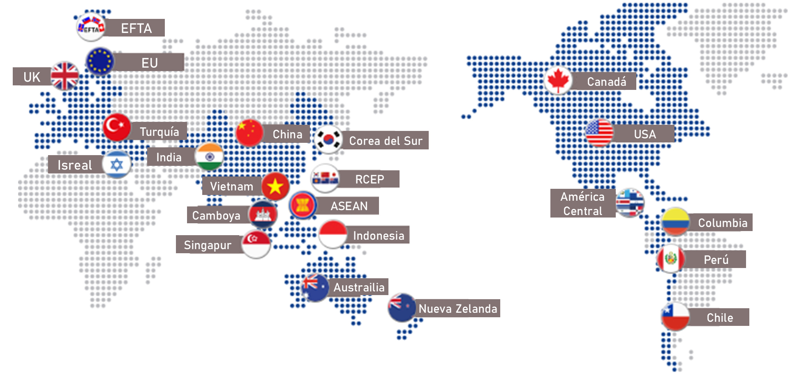

Para conocer más sobre el mercado de Corea del Sur,
visite nuestra página de Aprendizaje en Línea y mire
el Curso 1, "Panorama del mercado", y
el Curso 2, "Etiqueta empresarial".
Sobre Corea del Sur
Perfil de País: República de Corea
Antes de la firma del TLC C-CA y la incorporación de la República de Corea al BCIE, este país era solo uno de muchos actores externos en el mercado global, en lugar de un socio para la región centroamericana. Dada la distancia física de 13,558 km entre Corea y Centroamérica, es natural que Corea del Sur fuera poco conocida en la región.
Con la entrada en vigor total del TLC C-CA y la creciente presencia de Corea en la región, ahora es el momento de conocer más sobre el país y las oportunidades potenciales en su mercado.
- Nombre del país: República de Corea
- Capital: Seúl
- Población: 51.63 millones (2022)
- PIB: USD 1,664.3 mil millones (2022)
- Ingreso Nacional Bruto per cápita: USD 33,592 (2022)
- Tasa de crecimiento del PIB: 2.6% (2022)
- Moneda: Won surcoreano (USD 1 = KRW 1,318, 2022)
- Superficie: 100,364 km²
- Ubicación geográfica: Península coreana (latitud: 33°-43°; longitud: 124°-132°)
- Sistema político: Democracia liberal; Sistema presidencial
- Presidente: Yoon Suk Yeol (desde 2022)
- Idioma nacional: Coreano
- Bandera nacional: Taegeukgi
- Flor nacional: Mugunghwa (Rosa de Sharon)
Fundamentos Económicos
La República de Corea es uno de los pocos países que ha logrado transformarse con éxito de una economía de bajos ingresos a una economía de altos ingresos y se ha consolidado como líder mundial en innovación y tecnología. En las últimas décadas, el país ha alcanzado un notable éxito al combinar un rápido crecimiento económico con una significativa reducción de la pobreza, con un crecimiento promedio anual del Producto Interno Bruto (PIB) del 5.7% entre 1980 y 2022. Actualmente, ocupa el 10º lugar mundial en términos de PIB. El ingreso nacional bruto (INB) per cápita también aumentó rápidamente, pasando de USD 67 a principios de la década de 1950 a USD 33,592 en 2022.
| Economy Indicators | 2020 | 2021 | 2022 |
|---|---|---|---|
| PIB (Valor actual en USD, en miles de millones) | 1,645 | 1,811 | 1,734 |
| PIB per cápita (USD) | 31,728 | 35,004 | 33,592 |
| Crecimiento real del PIB (% de cambio) | -0.7% | 4.15% | 2.59% |
| Precios promedio al consumidor (% de cambio) | 0.5% | 2.5% | 5.1% |
| Tasa de desempleo (%) | 3.94% | 3.67% | 3% |
La República de Corea fue el primer receptor de ayuda que se convirtió en miembro del Comité de Asistencia para el Desarrollo (DAC) de la Organización para la Cooperación y el Desarrollo Económicos (OCDE) en 2010. A partir de 2024, la República de Corea es miembro donante de múltiples bancos multilaterales de desarrollo (BMD), incluyendo el Grupo del Banco Mundial, el Banco Asiático de Desarrollo (BAsD), el Banco Interamericano de Desarrollo (BID), el Banco Centroamericano de Integración Económica (BCIE), entre otros. Además, la sólida estabilidad económica de la República de Corea se refleja en su calificación crediticia soberana, que registró Aa2 (estable) por Moody’s en 2024. Esta calificación es una afirmación de la robusta salud financiera y un panorama de inversión prometedor.
Estado del Comercio
Este notable estatus económico refleja sus industrias innovadoras y su robusto comercio global, posicionando a la República de Corea como una nación líder que moldea el futuro del mercado global. A partir de 2023, la República de Corea es el 6º país comerciante más grande del mundo con un total de 21 acuerdos de libre comercio.

* Fuente : FTA Korea
Los principales socios comerciales de la República de Corea han sido la República Popular China, los Estados Unidos y Vietnam, que representaron más del 43% del total de exportaciones y más del 37% del total de importaciones en 2022.
En cuanto al comercio de la República de Corea con Centroamérica, tanto las importaciones como las exportaciones tienen un valor reducido, representando alrededor del 0.20% y el 0.41% del comercio total en 2022. A pesar de ser de tamaño relativamente pequeño, tanto las importaciones como las exportaciones aumentaron entre 2020 y 2022, y se espera un crecimiento adicional debido a los efectos del TLC C-CA firmado.
| Comercio Exterior de Mercancías (USD, en miles de millones) | 2020 | 2021 | 2022 |
|---|---|---|---|
| Exportaciones desde Corea | 512.5 | 644.4 | 683.6 |
| Importaciones a Corea | 467.6 | 615.9 | 731.4 |
| Importaciones de Centroamérica a Corea | 0.7 | 1.25 | 1.16 |
| Exportaciones de Corea a Centroamérica | 1.99 | 2.61 | 2.14 |
| Balanza Comercial de Corea con Centroamérica | 1.28 | 1.37 | 0.97 |
| Principales Exportaciones de Mercancías de Centroamérica a Corea |
Principales Importaciones de Mercancías de Centroamérica desde Corea |
|---|---|
|
|